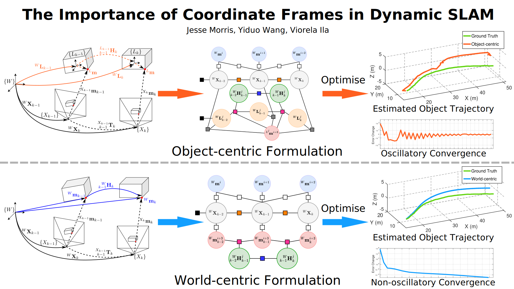

Most Simultaneous localisation and mapping (SLAM) systems have traditionally assumed a static world, which does not align with real-world scenarios. To enable robots to safely navigate and plan in dynamic environments, it is essential to employ representations capable of handling moving objects. Dynamic SLAM is an emerging field in SLAM research as it improves the overall system accuracy while providing additional estimation of object motions. State-of-the-art literature informs two main formulations for Dynamic SLAM, representing dynamic object points in either the world or object coordinate frame. While expressing object points in their local reference frame may seem intuitive, it does not necessarily lead to the most accurate and robust solutions. This paper conducts and presents a thorough analysis of various Dynamic SLAM formulations, identifying the best approach to address the problem. To this end, we introduce a front-end agnostic framework using GTSAM that can be used to evaluate various Dynamic SLAM formulations.
Our paper compares and evaluates two formulations for Dynamic SLAM, where we joinly optimize for camera poses, object motions/poses as well as static and dynamic points using factor graphs. The first formulation represents dynamic points in the object (or local) frame and is an intuiative approach as it easy to represent a rigid body using points that are static with-respect-to their local body frame. The second formulation represents dynamic points in the world frame which allows direct 3D point measurements to model the object motion in common reference frame. Our work addresses and analyses each approach in terms of estimation accuracy and the systems behaviour during optimization and conclues that the world-centric formulation is the better formulation.